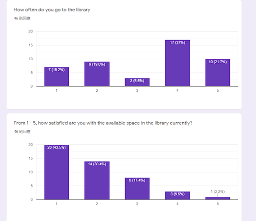
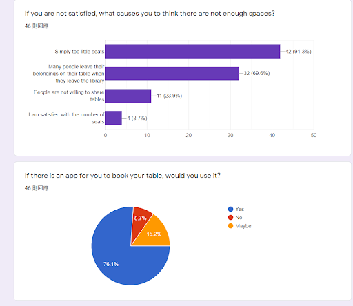
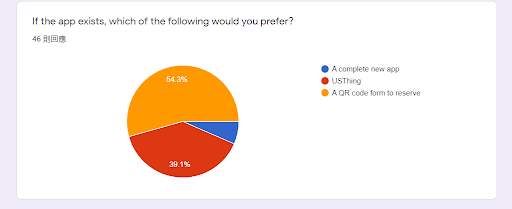
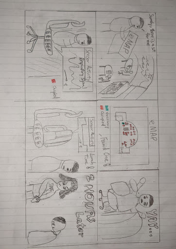
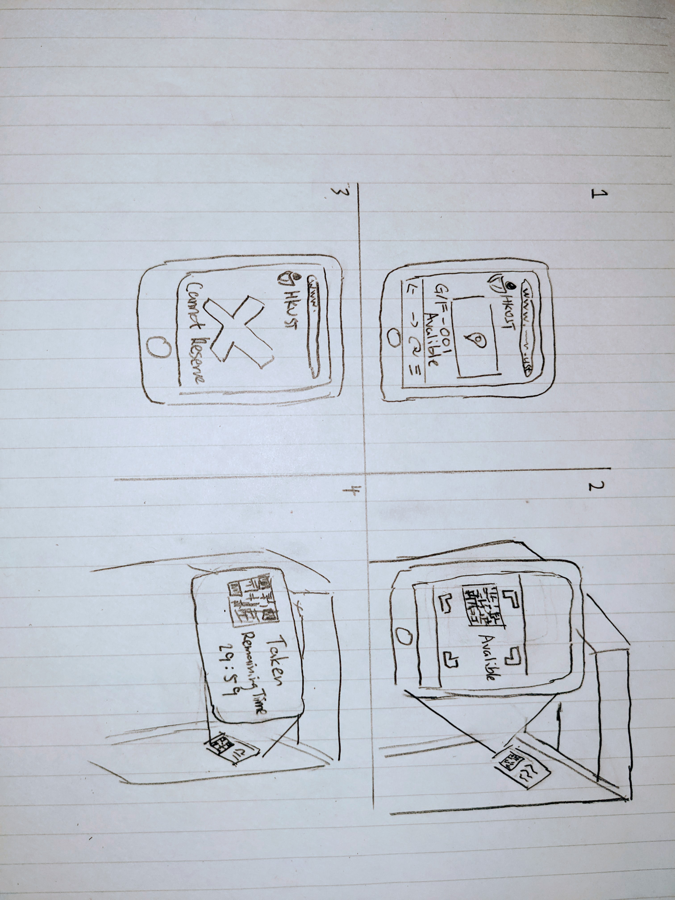

Team Member
Kwan Yeung CHING (Me)
Cheuk Hong Lok
Ka Fai Ng (Peter)
Zahabiya Mamujee
Chi Tak Mak (Derek)
Needfinding



After we talked and interviewed with fellow schoolmates,we found out that :
We also conducted survey with 46 people, we found out that :
- People spent for than 10 mins to look for a empty seat without success
- People who leave their belongings behind on the table often come back only after couple hours
- Only few spots left in the immensly large library, but people cannot find where they are
We also conducted survey with 46 people, we found out that :
- About half of the participants are not satisfied withe the avalible space in UST library
- Around 70% of them thinks that people who leave their belongings behind is the reason of limiting seats in library
- Three quarters of them would like to have means of online seat booking
Mind Map
We discussed on the most effective way to increase the no. of avalible seats with the approach of preventing seat robbery. We compared two ideas that
involves working with sensors, which are Infrared and Mechanical sensors respectively. We finally chose Mechanical seat occupancy sensor as it has less
electrical consumption, has a much simplier mechanism, and less invasive in terms of privacy. We also determined that in order to tackle the problem of
frustration of finding seats, a QR code interactive system is also preferrable. QR code, which is already familiarized by the public, provides a way to connect
to several platforms. Library user then can interact with the system via these platform to reserve a seat or search for an empty seat. The system together with
seating info from seat occupancy sensor, provides a well-rounded approach upgrade our library into a more "intelligent" one.
Our Design


Reflection
The topic for our first project was straightforward but challenging at the same time. Ususally things around us has the room for improvement, but HKUST itself is maintained by great talents
and supported with cutting edege technologies. I had always considered our campus is well designed, until we conducted interviews and surveys with the community. Therefore, I now realized
the importance of Needfinding to provide insights to start working on a idea in the right direction.
I had a new understanding of team work as another challenge that our group faced iwas the difficulty to arrange an online meeting, miraculously, it turns out we were able to hold our disipline
, finished our individual task on time and help each other out even before the first group meeting.
Attempting to design a fully practical system was not easy, as we don't actual build it, instead every aspect of the design requires simulations in our head. We are not able to receive feedback or gather real data. Nevertheless, we learnt to point out similaries between our idea and real life example, and gather knowledges from them that may help refining our prototype to be more practical and sensible to the users with its functionality.
Attempting to design a fully practical system was not easy, as we don't actual build it, instead every aspect of the design requires simulations in our head. We are not able to receive feedback or gather real data. Nevertheless, we learnt to point out similaries between our idea and real life example, and gather knowledges from them that may help refining our prototype to be more practical and sensible to the users with its functionality.
Video Prototype
Check out our video!